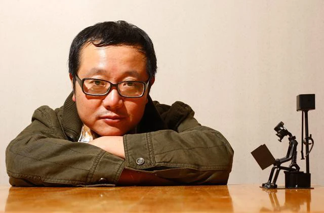
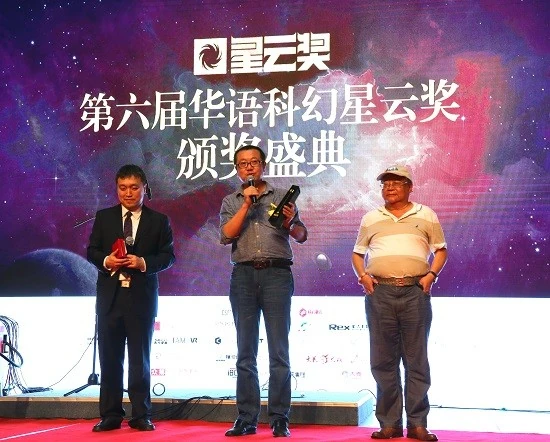
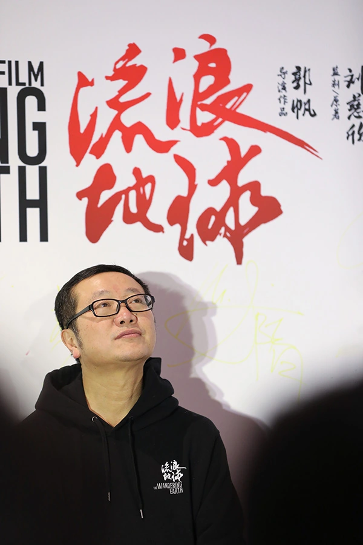

| 人生经历 | 主要作品 | 他人评价 | 返回首页 |
| 科幻启蒙：1963年6月，刘慈欣出生于北京，祖籍信阳市罗山，在山西阳泉长大 。刘慈欣父亲是普通矿工 ，母亲是小学语文老师兼班主任 ，家里文化氛围非常浓厚 。1966年，刘慈欣的父亲失去设计院工作，被下放到山西阳泉挖煤。刘慈欣被送到河南老家避难，小学二年级才到阳泉和父母团聚。高中阶段，刘慈欣进入阳泉一中学习。这期间，刘慈欣除了学习课本知识外，还会去阅读些科幻小说。在读到阿瑟·克拉克所著的《2001太空漫游》，书中用渊博的宇宙知识细致形象地描绘了未来太空的景象，这让高中生时的刘慈欣激动不已，感觉自己好像就是为科幻而生 。1970年4月25日，刘慈欣在回顾自己的科幻之路时总会提到，这一天是中国第一颗人造卫星“东方红一号”发射，卫星发射成功，也让刘慈欣心中生起一股莫名的向往之情。 | |
|  | 尝试写作：1978年，叶永烈的《小灵通漫游未来》出版面世。看到中国人写的科幻小说，刘慈欣感到了亲切，从而跃跃欲试，并开始尝试写作科幻小说。1981年，刘慈欣考入华北水利学院，学习水电专业 ；同年夏，刘慈欣在邯郸的雷雨天气中首次见到了“球状闪电”，这一现象也成为他后来著作《球状闪电》中的创作灵感 。1985年，刘慈欣大学毕业，被分配到山西娘子关发电厂 ；同年，撰写《宇宙塌缩》和《微观尽头》，这是刘慈欣参加工作之初重拾科幻的两篇试手之作，虽然语言显得有些生涩，但已蕴藏着往后小说中气魄大、悬念足的风格。 二十世纪八十年代，中国科幻陷入低潮，出版社不能再发表或出版科幻小说 。1989年，《科学文艺》改名《奇谈》，刘慈欣发现这本杂志，便写信要了本看看。看过之后，觉得没什么意思。那时他忙于工作和恋爱，无暇归集业余爱好，与科幻渐行渐远。等刘慈欣再次开始创作科幻小说，已是七八年之后。至于再次提笔的原因，平淡到就连刘慈欣也忘了。 1989年，刘慈欣完成《中国2185》的创作编写，在作品中尝试描述虚拟网络时代的权力和叛乱。1991年，创作科幻小说《超新星纪元》。20世纪90年代，刘慈欣开始向《科幻世界》杂志社投稿。1998年，刘慈欣把已经写好的长篇小说《超新星纪元》寄给杂志社的社长杨潇。1999年6月，刘慈欣在《科幻世界》首次发表两篇作品《鲸歌》和《微观尽头》；同年，首次凭借《带上她的眼睛》获得1999年中国科幻银河奖一等奖。 |
|---|---|
| 事业巅峰：1999年，刘慈欣在《科幻世界》杂志发表作品《鲸歌》，这标志着刘慈欣真正走上了科幻与社会现实相结合的创作之路，并以此为分水岭，从此跨入了创作精品的快车道。 [82000年，刘慈欣发表短篇小说《地火》《流浪地球》，并凭借《流浪地球》获得中国科幻银河奖特等奖。2001年，刘慈欣发表《乡村教师》《微纪元》《全频带阻塞干扰》等短篇小说，凭借《全频带阻塞干扰》和《乡村教师》首度同时获得银河奖两项奖项。2002年至2005年，刘慈欣凭借一系列中短篇小说连续获得中国科幻银河奖，期间的主要作品有《朝闻道》《思想者》《地球大炮》《诗云》《镜子》《赡养人类》等。2003年，作家出版社出版其作品《超新星纪元》，销量达一万两千册，虽然该销量与主流文学作品相比微不足道，但是科幻界意识到，中国科幻文学的长篇时代即将来临。随后，科幻世界杂志社主编姚海军约刘慈欣再次创作长篇作品，刘慈欣一鼓作气，仅用一年时间便完成了长篇科幻小说《球状闪电》。2006年5月，刘慈欣创作的长篇科幻小说《三体》第一部开始在《科幻世界》上连载，持续了半年多的时间，到年底结束；同年，凭借刘慈欣该作获得中国科幻银河奖特别奖。2007年底，完成系列续作《三体2：黑暗森林》。2008年5月，该作品出版。2010年10月，刘慈欣凭借第三部《三体3：死神永生》再度获得中国科幻银河奖特别奖。2011年，凭借《三体》获全球华语科幻星云奖最佳长篇小说金奖和《当代》长篇小说2011年度五佳；10月21日，刘慈欣在阳泉市作协四届一次理事会议上被选为阳泉市作协副主席。 2013年，刘慈欣凭借《三体》获西湖·类型文学双年奖金奖和第九届全国优秀儿童文学奖；同年，以370万元的年度版税收入第一次登上中国作家富豪榜 。2014年5月26日，中国教育图书进出口有限公司宣布《三体》三部曲的英文版将于2014年10月、2015年5月、2016年1月分三步在美国出版发行 ；7月，刘慈欣担任首届“这篇小说超好看”类型文学奖评委 ；8月，正式调入阳泉市文学艺术创作研究室，从事专门的文学创作和研究工作。2015年2月，刘慈欣凭借《三体》获得美国星云奖提名 ；3月，接任腾讯移动游戏“想象力架构师”；4月，作品《时间移民》获得“2014中国好书”奖项；6月，获2015腾讯书院文学奖“致敬小说家”；8月23日，凭借科幻小说《三体》获第73届世界科幻大会颁发的雨果奖最佳长篇小说奖，这是亚洲人首次获得雨果奖，也是中国科幻走出国门走向世界的重要一步；9月12日，获第26届科幻银河奖特别功勋奖；10月18日，凭借《三体》获得第六届全球华语科幻星云奖组委会颁发的华语科幻文学最高成就奖，并被授予特级华语科幻星云勋章，该等级勋章只有获得国际最高科幻奖项雨果奖和星云奖的作家有资格获取。2016年1月19日，刘慈欣被评为“2015中国科学年度新闻人物”；3月4日，刘慈欣在接受采访时确认，自己已当选山西省作协副主席；10月，成为中国"火星大使"，为中国火星探测工程名称和图形标识全球征集活动宣传推广工作代言。2017年4月4日，雨果奖候选小说名单揭晓，刘慈欣以《三体》第三部《死神永生》（英文翻译：刘宇昆）再次入选雨果奖最佳长篇提名；6月25日，凭借《三体3：死神永生》获得了世界级科幻奖轨迹奖最佳长篇科幻小说奖。2018年7月12日，IDG资本宣布正式聘请著名科幻作家刘慈欣担任IDG资本“首席畅想官” ；11月8日晚，刘慈欣被授予2018年克拉克想象力服务社会奖（Clarke Award for Imagination in Service to Society），以表彰其在科幻小说创作领域做出的贡献。 |  |
|  | 最近五年：2019年4月14日，刘慈欣当选第七届山西省作家协会副主席。2020年10月20日，BBC宣布与哔哩哔哩达成战略合作，将共同推出一系列纪录片，刘慈欣受BBC邀请加盟科学纪录片《Odyssey into the Future》的制作；同年，科幻小说《全频带阻塞干扰》将被改编为同名电影，已经通过备案，于2021年开机。2021年7月，刘慈欣加入商汤科技，担任科幻星球研究中心主任 ；11月，由刘慈欣领航、科幻编辑刘维佳主编的《领航员少年科幻丛书》正式上市 。2022年8月16日，《刘慈欣创作年谱1999——2022》首发式在山西阳泉举行。2023年3月10日，据外媒报道，影视公司Conqueror Entertainment已将刘慈欣的科幻作品《超新星纪元》影视化作为首批开展项目，除中文改编外，该公司还计划同时制作《超新星纪元》的英文电影和电视剧版本；6月10日，刘慈欣获得第1届百万钓鱼城科幻大奖成就奖—科幻大师奖 ；10月7日，刘慈欣展览馆揭牌仪式在赛鱼小学举行。2024年，在第八届中国科幻大会上，改编自刘慈欣同名小说《地球大炮》的科幻短片首次亮相。 |